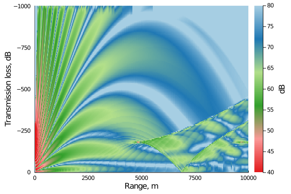

FreeRay : Bellhop for Outdoor Sound Propagation

FreeRay.jl is a library for outdoor noise propagation. Numerical ray tracing models are implemented using Bellhop ray tracing program written in Fortran by Michael Porter. FreeRay.jl provides utilities for
- Prepare input files, run Bellhop and plot output.
- Run Bellhop parallel.
Installation
FreeRay.jl package
Download Julia 1.5 or later.
FreeRay.jl is under development and thus is not registered. To install it simply open a julia REPL and do
`] add https://github.com/ducphucnguyen/FreeRay.jl.git`.Installation Bellhop
Before we can use FreeRay, we need to install Bellhop first. The source code can be download from this website Bellhop. installation details are provided in the website. If you have no experience with programming languages such as C or Fortran, it will take sometime to install Bellhop!
To check if Bellhop is successfully installed, we run this command in Julia REPL. If we can see the bellow error, this means that we successfully install Bellhop. Congratulation!
run(`bellhop`)
STOP Fatal Error: Check the print file for details
Process(`bellhop`, ProcessExited(0))Supporting and Citing
This software was developed as part of academic research. If you would like to help support it, please star the repository. If you use this software as part of your research, teaching, or other activities, we would be grateful if you could cite:
@article{nguyen2020machine,
title={A machine learning approach for detecting wind farm noise amplitude modulation},
author={Nguyen, Duc Phuc and Hansen, Kristy and Lechat, Bastien and Catcheside, Peter and Zajamsek, Branko},
year={2020},
publisher={Preprints}
}Contribution Guidelines
This package is written and maintained by Duc Phuc Nguyen. Please fork and send a pull request or create a GitHub issue for bug reports. If you are submitting a pull request make sure to follow the official Julia Style Guide and please use 4 spaces and NOT tabs.
Contents
Home
Getting Started Tutorials
- Benchmark cases
- Case 1: Constant sound speed profile
- Case 2: Positive sound gradient (Downwind)
- Case 3: Negative sound gradient (Upwind)
- Case 4: Composite profile
- Wind turbine noise propagation